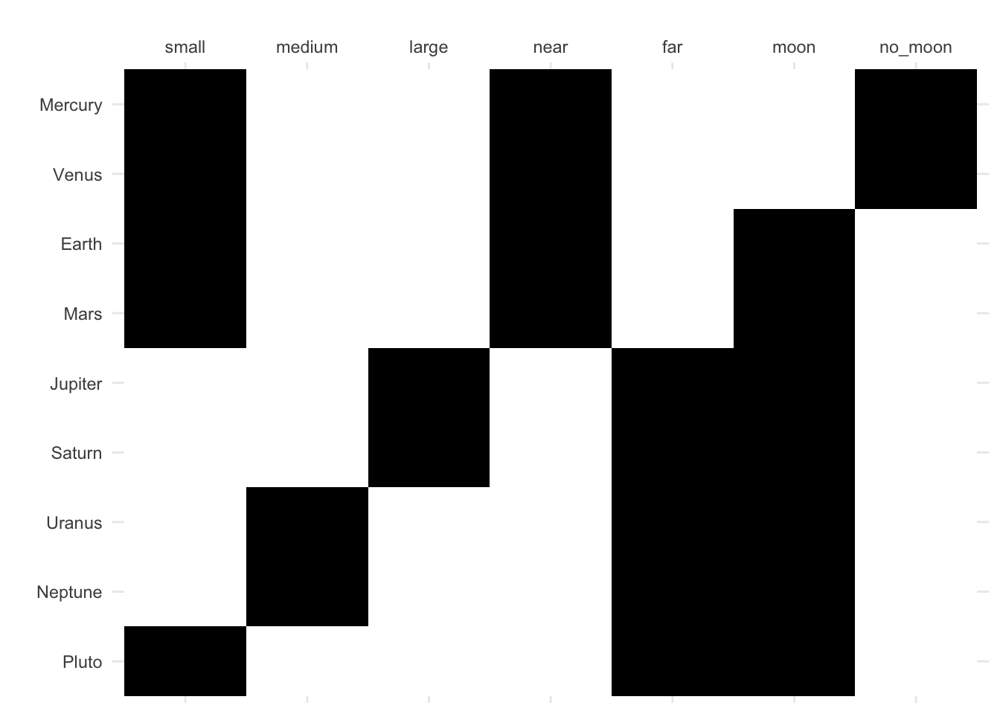

library(fcaR)fcaR: Formal Concept Analysis with R
Motivation
Why to develop an R package for FCA?
R, together with Python, are the two most widely used programming languages in Machine Learning and Data Science.- In
Rthere are already libraries for association rule mining that have become standard: arules. - There is no library in
Rthat implements the basic ideas and functions of FCA and allows them to be used in other contexts.
History of FCA
Port-Royal logic (traditional logic): formal notion of concept, Arnauld A., Nicole P.: La logique ou l’art de penser, 1662 (Logic Or The Art Of Thinking, CUP, 2003): concept = extent (objects) + intent (attributes)
G. Birkhoff (1940s): work on lattices and related mathematical structures, emphasizes applicational aspects of lattices in data analysis.
Barbut M., Monjardet B.: Ordre et classiffication, algebre et combinatoire. Hachette, Paris, 1970.
Wille R.: Restructuring lattice theory: an approach based on hierarchies of concepts. In: I. Rival (Ed.): Ordered Sets. Reidel, Dordrecht, 1982, pp. 445-470.
Ganter B., Wille R.: Formal Concept Analysis. Springer, 1999.
Application of FCA
- Knowledge extraction
- Clustering and classification
- Machine learning
- Concepts, ontologies
- Rules, association rules, attribute implications
The fcaR library
The package is in a stable phase in a repository on Github and on CRAN.
Unit tests
Vignettes with demos
Status:
- lifecycle: stable
- CRAN version: 1.2.1
- downloads: ~36K
Where to find help
Part 0: Introduction
Background in FCA
We show some of the main methods of FCA using the functionalities and data structures of the fcaR package.
Following the discourse of Conceptual Exploration - B. Ganter, S. Obiedkov - 2016.
We will, when needed, recall the notions of concept-forming operators, concepts, implication basis, etc.
Structure of fcaR
The fcaR package provides data structures which allow the user to work seamlessly with formal contexts and sets of implications. Three basic objects wil be used in R language:
FormalContextencapsulates the definition of a formal context (G, M, I), being G the set of objects, M the set of attributes and I the (fuzzy) relationship matrix, and provides methods to operate on the context using FCA tools.ImplicationSetrepresents a set of implications over a specific formal context.Setencapsulates a class for storing variables (attributes or objects) in an efficient way.
As an advantage, object oriented programming style of R language and all the knowledge (concepts, implications, minimal generators, etc.) will be stored inside the formal context object.
fcaR includes documentation and vignettes.
From the point of view of efficiency, the
fcaRpackage uses the vectorial and parallelization capabilities of the R language, whereas algorithmic bottlenecks have been implemented in C.Currently, the package is under active development.
As of today the package has 36000 downloads, published in CRAN repositories (https://cran.rstudio.com/web/packages/fcaR/index.html) with a living lifecycle https://github.com/Malaga-FCA-group/fcaR and with vignettes to help spread the package https://neuroimaginador.github.io/fcaR/.
Part I: Fundamentals
FCA provides methods to describe the relationship between a set of objects G and a set of attributes M.
We show the main methods of FCA using the main functionalities and data structures of the fcaR package.
Formal contexts
The first step when using the fcaR package to analyse a formal context is to create a variable of class FormalContext which will store all the information related to the context.
We use the Formal Context, \mathbf{ K} := (G, M, I) about planets:
Wille R (1982). “Restructuring Lattice Theory: An Approach Based on Hierarchies of Concepts.” In Ordered Sets, pp. 445–470. Springer.
We load the fcaR package by:
- Visualizing the dataset
| small | medium | large | near | far | moon | no_moon | |
|---|---|---|---|---|---|---|---|
| Mercury | 1 | 0 | 0 | 1 | 0 | 0 | 1 |
| Venus | 1 | 0 | 0 | 1 | 0 | 0 | 1 |
| Earth | 1 | 0 | 0 | 1 | 0 | 1 | 0 |
| Mars | 1 | 0 | 0 | 1 | 0 | 1 | 0 |
| Jupiter | 0 | 0 | 1 | 0 | 1 | 1 | 0 |
| Saturn | 0 | 0 | 1 | 0 | 1 | 1 | 0 |
| Uranus | 0 | 1 | 0 | 0 | 1 | 1 | 0 |
| Neptune | 0 | 1 | 0 | 0 | 1 | 1 | 0 |
| Pluto | 1 | 0 | 0 | 0 | 1 | 1 | 0 |
- Creating a variable
fc_planets
fc_planets <- FormalContext$new(planets)
fc_planetsFormalContext with 9 objects and 7 attributes.
small medium large near far moon no_moon
Mercury X X X
Venus X X X
Earth X X X
Mars X X X
Jupiter X X X
Saturn X X X
Uranus X X X
Neptune X X X
Pluto X X X fc_planets is a R variable which stores the formal context \mathbf{ K} but also, all the knowledge related with the data inside:
- the attributes M,
- the objects G,
- the incidence relation
- the concepts (when they are computed)
- the implications (when they are computed)
- etc.
Help: fcaR for your .tex documents:
fc_planets$to_latex(
caption = "Planets dataset.",
label = "tab:planets")\begin{table} \caption{Planets dataset.}\label{tab:planets} \centering \begin{tabular}{r|ccccccc}
& $small$ & $medium$ & $large$ & $near$ & $far$ & $moon$ & $no\_moon$\\
\hline
$Mercury$ & $\times$ & & & $\times$ & & & $\times$ \\
$Venus$ & $\times$ & & & $\times$ & & & $\times$ \\
$Earth$ & $\times$ & & & $\times$ & & $\times$ & \\
$Mars$ & $\times$ & & & $\times$ & & $\times$ & \\
$Jupiter$ & & & $\times$ & & $\times$ & $\times$ & \\
$Saturn$ & & & $\times$ & & $\times$ & $\times$ & \\
$Uranus$ & & $\times$ & & & $\times$ & $\times$ & \\
$Neptune$ & & $\times$ & & & $\times$ & $\times$ & \\
$Pluto$ & $\times$ & & & & $\times$ & $\times$ &
\end{tabular}
\end{table}which gives something like:
| small | medium | large | near | far | moon | no_moon | |
|---|---|---|---|---|---|---|---|
| Mercury | x | x | x | ||||
| Venus | x | x | x | ||||
| Earth | x | x | x | ||||
| Mars | x | x | x | ||||
| Jupiter | x | x | x | ||||
| Saturn | x | x | x | ||||
| Uranus | x | x | x | ||||
| Neptune | x | x | x | ||||
| Pluto | x | x | x |
fc_planets can be plotted (in gray scale for fuzzy datasets)
fc_planets$plot()
fc_planets can be saved or loaded in a file
fc_planets$save(filename = "./fc_planets.rds")
fcnew <- FormalContext$new("./fc_planets.rds")
fcnewFormalContext with 9 objects and 7 attributes.
small medium large near far moon no_moon
Mercury 1 0 0 1 0 0 1
Venus 1 0 0 1 0 0 1
Earth 1 0 0 1 0 1 0
Mars 1 0 0 1 0 1 0
Jupiter 0 0 1 0 1 1 0
Saturn 0 0 1 0 1 1 0
Uranus 0 1 0 0 1 1 0
Neptune 0 1 0 0 1 1 0
Pluto 1 0 0 0 1 1 0 Basic methods
Derivation operators
Functions intent() (\equiv^{\uparrow}) and extent() (\equiv^{\downarrow}) are designed to perform the corresponding operations:
A^{\uparrow} := \{m\in M : (g,m)\in I,\, \forall g\in A\} B^{\downarrow} := \{g\in G : (g,m)\in I,\, \forall m\in B\}
Example:
To compute \{{\rm Mars}, {\rm Earth}\}^{\uparrow}:
set_objects <- Set$new(fc_planets$objects)
set_objects$assign(Mars = 1, Earth = 1)
fc_planets$intent(set_objects){small, near, moon}To compute \{{\rm medium}, {\rm far}\}^{\downarrow}:
set_attributes <- Set$new(fc_planets$attributes)
set_attributes$assign(medium = 1, far = 1)
fc_planets$extent(set_attributes){Uranus, Neptune}This pair of mappings is a Galois connection.
The composition of intent and extent is the closure of a set of attributes.
Closures
To compute \{{\rm medium}\}^{\downarrow\uparrow}:
# Compute the closure of S
set_attributes1 <- Set$new(fc_planets$attributes)
set_attributes1$assign(medium = 1)
MyClosure <- fc_planets$closure(set_attributes1)
MyClosure{medium, far, moon}This means that all planets which have the attributes medium have far and moon in common.
The function $is_closed() allows us to know if a set of attributes is closed.
set_attributes2 <- Set$new(attributes = fc_planets$attributes)
set_attributes2$assign(moon = 1, large = 1, far = 1)
set_attributes2{large, far, moon}# Is it closed?
fc_planets$is_closed(set_attributes2)[1] TRUEset_attributes3 <- Set$new(attributes = fc_planets$attributes)
set_attributes3$assign(small = 1, far = 1)
set_attributes3{small, far}# Is it closed?
fc_planets$is_closed(set_attributes3)[1] FALSEConcept lattice
Concepts
Definition: A formal concept is a pair (A,B) such that A \subseteq G, B \subseteq M, A^{\uparrow} = B and B^{\downarrow} = A. Consequently, A and B are closed sets of objects and attributes, respectively.
\big(\{{\rm Jupiter}, {\rm Saturn}, {\rm Uranus}, {\rm Neptune}, {\rm Pluto}\},\{{\rm far}, {\rm moon}\}\big) is a concept. It is a maximal cluster.
| small | medium | large | near | far | moon | no_moon | |
|---|---|---|---|---|---|---|---|
| Mercury | x | x | x | ||||
| Venus | x | x | x | ||||
| Earth | x | x | x | ||||
| Mars | x | x | x | ||||
| Jupiter | x | x | x | ||||
| Saturn | x | x | x | ||||
| Uranus | x | x | x | ||||
| Neptune | x | x | x | ||||
| Pluto | x | x | x |
Note: concepts for your .tex documents:
fc_planets$concepts$to_latex()Computing concepts
We use the function $find_concepts()
Computing all the concepts from formal context of planets:
fc_planets$find_concepts()
fc_planets$conceptsA set of 12 concepts:
1: ({Mercury, Venus, Earth, Mars, Jupiter, Saturn, Uranus, Neptune, Pluto}, {})
2: ({Earth, Mars, Jupiter, Saturn, Uranus, Neptune, Pluto}, {moon})
3: ({Jupiter, Saturn, Uranus, Neptune, Pluto}, {far, moon})
4: ({Jupiter, Saturn}, {large, far, moon})
5: ({Uranus, Neptune}, {medium, far, moon})
6: ({Mercury, Venus, Earth, Mars, Pluto}, {small})
7: ({Earth, Mars, Pluto}, {small, moon})
8: ({Pluto}, {small, far, moon})
9: ({Mercury, Venus, Earth, Mars}, {small, near})
10: ({Mercury, Venus}, {small, near, no_moon})
11: ({Earth, Mars}, {small, near, moon})
12: ({}, {small, medium, large, near, far, moon, no_moon})# First 6 concepts
head(fc_planets$concepts)A set of 6 concepts:
1: ({Mercury, Venus, Earth, Mars, Jupiter, Saturn, Uranus, Neptune, Pluto}, {})
2: ({Earth, Mars, Jupiter, Saturn, Uranus, Neptune, Pluto}, {moon})
3: ({Jupiter, Saturn, Uranus, Neptune, Pluto}, {far, moon})
4: ({Jupiter, Saturn}, {large, far, moon})
5: ({Uranus, Neptune}, {medium, far, moon})
6: ({Mercury, Venus, Earth, Mars, Pluto}, {small})# The first concept
firstconcept <- fc_planets$concepts[1]
firstconceptA set of 1 concepts:
1: ({Mercury, Venus, Earth, Mars, Jupiter, Saturn, Uranus, Neptune, Pluto}, {})# A subset of concepts
fc_planets$concepts[3:4]A set of 2 concepts:
1: ({Jupiter, Saturn, Uranus, Neptune, Pluto}, {far, moon})
2: ({Jupiter, Saturn}, {large, far, moon})# Plot the Hasse diagram of the concept lattice
fc_planets$concepts$plot()
Implications
Computing
find_implications(): the function to extract the canonical basis of implications and the concept lattice using the NextClosure algorithm
It stores both a ConceptLattice and an ImplicationSet objects internally in the FormalContext variable.
fc_planets$find_implications()Manipulating
The computed implications are:
fc_planets$implicationsImplication set with 10 implications.
Rule 1: {no_moon} -> {small, near}
Rule 2: {far} -> {moon}
Rule 3: {near} -> {small}
Rule 4: {large} -> {far, moon}
Rule 5: {medium} -> {far, moon}
Rule 6: {medium, large, far, moon} -> {small, near, no_moon}
Rule 7: {small, near, moon, no_moon} -> {medium, large, far}
Rule 8: {small, near, far, moon} -> {medium, large, no_moon}
Rule 9: {small, large, far, moon} -> {medium, near, no_moon}
Rule 10: {small, medium, far, moon} -> {large, near, no_moon}Implications can be read by sub-setting (the same that in R language for vector, etc.):
fc_planets$implications[3]Implication set with 1 implications.
Rule 1: {near} -> {small}fc_planets$implications[1:4]Implication set with 4 implications.
Rule 1: {no_moon} -> {small, near}
Rule 2: {far} -> {moon}
Rule 3: {near} -> {small}
Rule 4: {large} -> {far, moon}fc_planets$implications[c(1:4,3)]Implication set with 5 implications.
Rule 1: {no_moon} -> {small, near}
Rule 2: {far} -> {moon}
Rule 3: {near} -> {small}
Rule 4: {large} -> {far, moon}
Rule 5: {near} -> {small}Cardinality and size are computed using functions:
the number of implications is computed using
fc_planets$implications$cardinality()the number of attributes for each implication is computed using
fc_planets$implications$size()
fc_planets$implications$cardinality()[1] 10sizes <- fc_planets$implications$size()
sizes LHS RHS
[1,] 1 2
[2,] 1 1
[3,] 1 1
[4,] 1 2
[5,] 1 2
[6,] 4 3
[7,] 4 3
[8,] 4 3
[9,] 4 3
[10,] 4 3colMeans(sizes)LHS RHS
2.5 2.3 Help: … for your .tex documents:
fc_planets$implications$to_latex()\begin{longtable*}{rrcl}
1: &\left\{\mathrm{no\_moon}\right\}&\ensuremath{\Rightarrow}&\left\{\mathrm{small}, \mathrm{near}\right\}\\
2: &\left\{\mathrm{far}\right\}&\ensuremath{\Rightarrow}&\left\{\mathrm{moon}\right\}\\
3: &\left\{\mathrm{near}\right\}&\ensuremath{\Rightarrow}&\left\{\mathrm{small}\right\}\\
4: &\left\{\mathrm{large}\right\}&\ensuremath{\Rightarrow}&\left\{\mathrm{far}, \mathrm{moon}\right\}\\
5: &\left\{\mathrm{medium}\right\}&\ensuremath{\Rightarrow}&\left\{\mathrm{far}, \mathrm{moon}\right\}\\
6: &\left\{\mathrm{medium}, \mathrm{large}, \mathrm{far}, \mathrm{moon}\right\}&\ensuremath{\Rightarrow}&\left\{\mathrm{small}, \mathrm{near}, \mathrm{no\_moon}\right\}\\
7: &\left\{\mathrm{small}, \mathrm{near}, \mathrm{moon}, \mathrm{no\_moon}\right\}&\ensuremath{\Rightarrow}&\left\{\mathrm{medium}, \mathrm{large}, \mathrm{far}\right\}\\
8: &\left\{\mathrm{small}, \mathrm{near}, \mathrm{far}, \mathrm{moon}\right\}&\ensuremath{\Rightarrow}&\left\{\mathrm{medium}, \mathrm{large}, \mathrm{no\_moon}\right\}\\
9: &\left\{\mathrm{small}, \mathrm{large}, \mathrm{far}, \mathrm{moon}\right\}&\ensuremath{\Rightarrow}&\left\{\mathrm{medium}, \mathrm{near}, \mathrm{no\_moon}\right\}\\
10: &\left\{\mathrm{small}, \mathrm{medium}, \mathrm{far}, \mathrm{moon}\right\}&\ensuremath{\Rightarrow}&\left\{\mathrm{large}, \mathrm{near}, \mathrm{no\_moon}\right\}\\
\end{longtable*}Redudancy
Simplification Logic is used to remove redundancy in a logic style, that is, applying some rules to the formulas (the implications)
sizes <- fc_planets$implications$size()
colMeans(sizes)
fc_planets$implications$apply_rules(
rules = c("composition",
"generalization",
"simplification"))
# sizes <- fc_planets$implications$size()
# colMeans(sizes)
# Simplified implications
fc_planets$implications
# Which equivalence rules are present?
equivalencesRegistry$get_entry_names()
equivalencesRegistry$get_entry("simplification")Validity
We can see if an ImplicationSet holds in a FormalContext by using the %holds_in% operator.
For instance, we can check that the first implication so far in the Duquenne-Guigues basis holds in the planets formal context:
imp1 <- fc_planets$implications[1]
imp1Implication set with 1 implications.
Rule 1: {no_moon} -> {small, near}imp1 %holds_in% fc_planets[1] TRUEBasic exercises
- Compute the intent of
EarthandEarth,Mars, Mercury(use the argument attributes in the class Set).
{Mercury, Earth, Mars}Given the set of objects:{Earth}The intent is:{small, near, moon}Given the set of objects:{Mercury, Earth, Mars}{small, near}- Compute the extent of
largeandfar,large(use the argument attributes in the class Set) and save the result in a variablee1, e2.
Given the set of objects:{large}The extent is:{Jupiter, Saturn}Given the set of objects:{large, far}{Jupiter, Saturn}- Compute the intent of variables
e1and also ofe2.
{large, far, moon}{large, far, moon}With the information from the above questions tell me a concept. Check with any command of fcaR package.
Compute the closure of
no_moon
{small, near, no_moon}({Earth, Mars, Jupiter, Saturn, Uranus, Neptune, Pluto}, {moon})- Compute all the concepts and plot them. How many are there? Show the fist and the last (use subsetting).
A set of 2 concepts:
1: ({Mercury, Venus, Earth, Mars, Jupiter, Saturn, Uranus, Neptune, Pluto}, {})
2: ({}, {small, medium, large, near, far, moon, no_moon})- Compute the major concept (in lattice) that has moon. The same with no_moon. Locate both in the lattice to understand the meaning.
({Earth, Mars, Jupiter, Saturn, Uranus, Neptune, Pluto}, {moon})({Mercury, Venus}, {small, near, no_moon})- Compute the lowest concept (in lattice) that has Pluto. The same with Earth. Locate both in the lattice to understand the meaning.
({Pluto}, {small, far, moon})({Earth, Mars}, {small, near, moon})Advanced things
Concept support
The support of a concept \langle A, B\rangle (A is the extent of the concept and B is the intent) is the cardinality (relative) of the extent - number of objects of the extent.
supp(\langle A, B\rangle)=\frac{|A|}{|G|}
We use the function: $support()
fc_planets$concepts$support() [1] 1.0000000 0.7777778 0.5555556 0.2222222 0.2222222 0.5555556 0.3333333
[8] 0.1111111 0.4444444 0.2222222 0.2222222 0.0000000️ The support of itemsets and concepts is used to mine all the knowledge in the dataset: Algorithm Titanic - computing iceberg concept lattices.
Sublattices
When the concept lattice is too large, it can be useful in certain occasions to just work with a sublattice of the complete lattice. To this end, we use the sublattice() function.
$sublattice(): find a sublattice of the complete lattice
For instance: Computing a sublattice of those concepts with support greater than the threshold
fc_planets$conceptsA set of 12 concepts:
1: ({Mercury, Venus, Earth, Mars, Jupiter, Saturn, Uranus, Neptune, Pluto}, {})
2: ({Earth, Mars, Jupiter, Saturn, Uranus, Neptune, Pluto}, {moon})
3: ({Jupiter, Saturn, Uranus, Neptune, Pluto}, {far, moon})
4: ({Jupiter, Saturn}, {large, far, moon})
5: ({Uranus, Neptune}, {medium, far, moon})
6: ({Mercury, Venus, Earth, Mars, Pluto}, {small})
7: ({Earth, Mars, Pluto}, {small, moon})
8: ({Pluto}, {small, far, moon})
9: ({Mercury, Venus, Earth, Mars}, {small, near})
10: ({Mercury, Venus}, {small, near, no_moon})
11: ({Earth, Mars}, {small, near, moon})
12: ({}, {small, medium, large, near, far, moon, no_moon})# Compute index of interesting concepts - using support
idx <- which(fc_planets$concepts$support() > 0.5)
# Build the sublattice
sublattice <- fc_planets$concepts$sublattice(idx)
sublattice
sublattice$plot()
# Compute index of interesting concepts - using indexes
idx <- c(8, 9, 10) # concepts 8, 9 and 10
# Build the sublattice
sublattice <- fc_planets$concepts$sublattice(idx)
sublattice
sublattice$plot()Hierarchy
That is: Subconcepts, superconcepts, infimum and supremum
Given a concept, we can compute all its subconcepts and all its superconcepts.
For instance, find all the subconcepts and superconcepts of the concept number 5 in the list of concepts.
C <- fc_planets$concepts[5]
C
# Its subconcepts:
fc_planets$concepts$subconcepts(C)
# And its superconcepts:
fc_planets$concepts$superconcepts(C)The same, for supremum and infimum of a set of concetps.
To find the supremum and the infimum of the concepts 5,6,7.
# A list of concepts
C <- fc_planets$concepts[5:7]
C
# Supremum of the concepts in C
fc_planets$concepts$supremum(C)
# Infimum of the concepts in C
fc_planets$concepts$infimum(C)Notable elements
In a complete lattice, an element is called supremum-irreducible or join-irreducible if it cannot be written as the supremum of other elements and infimum-irreducible or meet-irreducible if it can not be expressed as the infimum of other elements.
The irreducible elements with respect to join (supremum) and meet (infimum) can be computed for a given concept lattice:
fc_planets$concepts$join_irreducibles()
fc_planets$concepts$meet_irreducibles()Clarification, reduction
Methods to simplify the context, removing redundancies, while retaining all the knowledge
clarify(), which removes duplicated attributes and objects (columns and rows in the original matrix)
reduce(), which uses closures to remove dependent attributes, but only on binary formal contexts
# We clone the context just to keep a copy
fc_planetscopy <- fc_planets$clone()
fc_planetscopy$clarify(TRUE)FormalContext with 5 objects and 7 attributes.
small medium large near far moon no_moon
Pluto X X X
[Mercury, Venus] X X X
[Earth, Mars] X X X
[Jupiter, Saturn] X X X
[Uranus, Neptune] X X X fc_planetscopy$reduce(TRUE)FormalContext with 5 objects and 7 attributes.
small medium large near far moon no_moon
Pluto X X X
[Mercury, Venus] X X X
[Earth, Mars] X X X
[Jupiter, Saturn] X X X
[Uranus, Neptune] X X X Note that merged attributes or objects are stored in the new formal context by using squared brackets to unify them, e.g. [Mercury, Venus]
Standard Context
The standard context is ({\cal J}, {\cal M}, \leq), where \cal J is the set of join-irreducible concepts and \cal M are the meet-irreducible ones.
standardize() is the function to compute the standard context.
Note: objects are now named J1, J2… and attributes are M1, M2…, from join and meet
fc_planetscopy <- fc_planets$clone()
fc_planetscopy$find_concepts()
fc_planetscopy$standardize()FormalContext with 5 objects and 7 attributes.
M1 M2 M3 M4 M5 M6 M7
J1 X X X
J2 X X X
J3 X X X
J4 X X X
J5 X X X Entailment
Imp1 %entails% Imp2 - Imp2 can be derived (logical consequence) of Imp1
fc_planets$find_implications()
imps <- fc_planets$implications
imps2 <- fc_planets$implications$clone()
imps2$apply_rules(c("simp", "rsimp"))
imps %entails% imps2 [,1] [,2] [,3] [,4] [,5] [,6] [,7] [,8] [,9] [,10]
[1,] TRUE TRUE TRUE TRUE TRUE TRUE TRUE TRUE TRUE TRUEimps2 %entails% imps [,1] [,2] [,3] [,4] [,5] [,6] [,7] [,8] [,9] [,10]
[1,] TRUE TRUE TRUE TRUE TRUE TRUE TRUE TRUE TRUE TRUEEquivalence
Imp1 %~% Imp2 - Are Imp1 and Imp2 equivalent?
imps %~% imps2[1] TRUEimps %~% imps2[1:3][1] FALSE